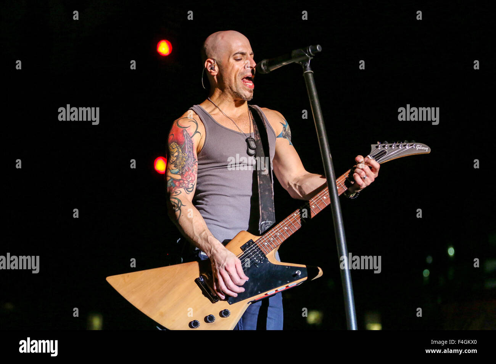
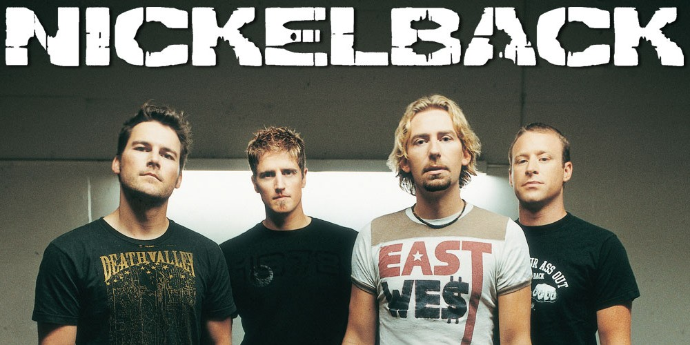
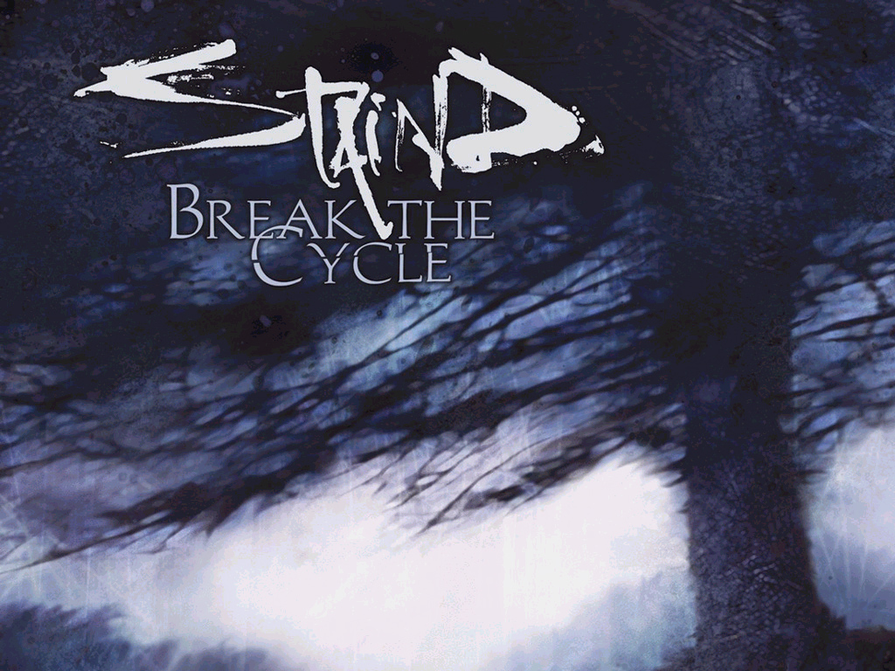
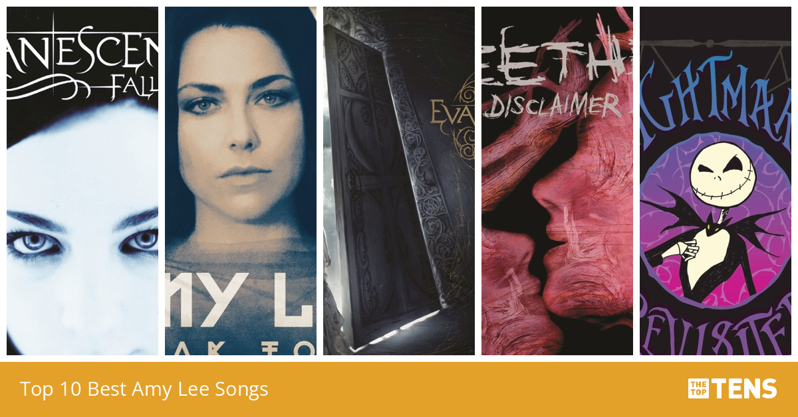

Daughtry
Chris Daughtry • Rock
Powerful vocals and honest songwriting. This live energy is what keeps me coming back to their music.
Albums and artists that have stuck with me

Chris Daughtry • Rock
Powerful vocals and honest songwriting. This live energy is what keeps me coming back to their music.

Heavy Metal • Iconic
One of the greatest metal bands of all time. Their riffs and intensity have been a constant in my playlists.

Electronic • Alive 2007 era
The helmets, the production, the pure dance energy. Daft Punk changed how I hear electronic music.

Rock • Early 2000s
Catchy, loud, and unapologetic. These songs were everywhere when I was growing up and still hit hard.

Nu-Metal / Rock • 2001
Raw emotion and heavy guitars. This album was one of the first that really connected with me on a deeper level.

Alternative Rock • Gothic
Amy Lee’s voice is unmatched. Evanescence brought a dramatic, emotional sound that still stands out.